어떤 프로젝트를 맡던
팀원으로서의 김윤재는
개발할 수 있습니다.

With the Right Tools, You Can Create Amazing Experiences.
Our passion for craftsmanship comes from the desire to deliver simple and beautiful experiences that drive productivity across your digital product teams, and that enable data-driven, high-performing teams across your entire organization. Built with care and attention to every small detail, from our learned expertise over the last three decades.
Design & Development
Deliver apps in half the time with Infragistics Ultimate! With hundreds of UI controls & components, the fastest data grids and data charts for every popular web & desktop platform, plus a complete design-to-code platform including a web-based WYSIWYG drag & drop IDE.
Business Intelligence
Empower everyone in your organization to make smarter business decisions and take actions based on predictive data. Reveal makes it easy to embed analytics into your apps and easily connect to modern cloud platforms like Microsoft Azure, Google Big Query, and AWS.
Team Productivity
Slingshot is the only data-driven, all-in-one digital workplace for team collaboration that lets people go from insight to action in seconds, combines data analytics, project and content management, chat, and goals-based strategy benchmarking.
Stories That Truly Matter
More than two million developers use Infragistics UX and UI toolkits to support and accelerate their application development.
Ideas That Inspire. Discover What's New.
Are You Stuck in a Design Silo?
Deliver apps in half the time with Infragistics Ultimate! With hundreds of UI controls & components, the fastest data grids and data charts for every popular web & desktop platform, plus a complete design-to-code platform including a web-based WYSIWYG drag & drop IDE.
Benefits of UI Toolkit Standardization
Empower everyone in your organization to make smarter business decisions and take actions based on predictive data. Reveal makes it easy to embed analytics into your apps and easily connect to modern cloud platforms like Microsoft Azure, Google Big Query, and AWS.Trends in Software Development & Analytics (Survey Report)
Slingshot is the only data-driven, all-in-one digital workplace for team collaboration that lets people go from insight to action in seconds, combines data analytics, project and content management, chat, and goals-based strategy benchmarking.Stay Current with the Latest News and Features
See all news and articlesApp Builder™ Included in Infragistics Ultimate 21.2
App Builder is a low-code tool that speeds app development from design to code. Release 21.2 also includes 17 new Blazor and Web Components controls, new Angular 13 components and .NET 6 compatibility.
Software Industry Predictions in 2022 From Infragistics
The Infragistics experts Jason Beres, Tobias Komischke, and Dean Guida share their 2022 software industry predictions about low-code/no-code, app builders, big data/embedded analytics, UI/UX design, data catalogs, and more.
4 Ways to Drive Internal Innovation
Organizations that adopt a culture of restless innovation among staff members inspire passion, and inevitably operate at an advantage, writes Infragistics Founder and CEO, Dean Guida.
5 Industries Benefiting from Embedded Analytics
See how 5 industries including healthcare, banking and financial services, telecommunications, retail and consumer goods, and manufacturing are taking advantage of actionable insights from embedded analytics.
Working Together and Pushing Boundaries
Join Our Next Webinar!
Webinar: What’s New in Infragistics Ultimate 21.2
-
Date: Jan 25, 2022
-
Time: 11:00 AM (EST)
Our latest release of Infragistics Ultimate 21.2 brought many new updates and features to help you deliver powerful and beautiful web applications.
Join our demo-heavy session with our product development team so that we can help accelerate the development of your next application.